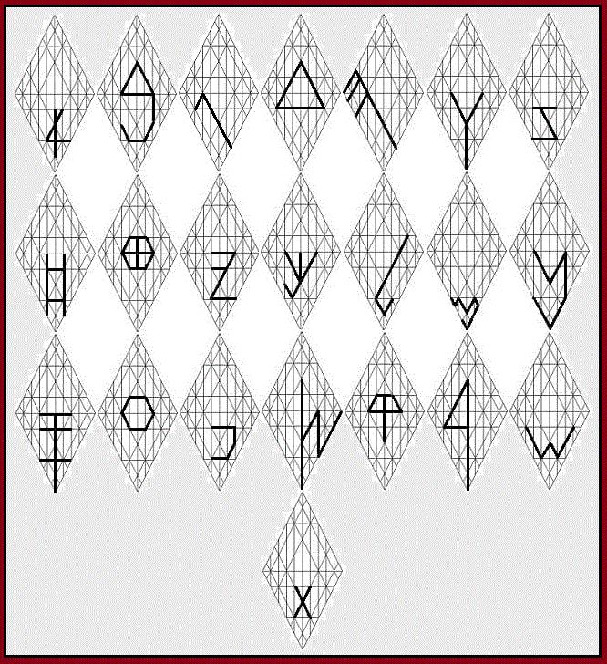

Paleo-Hebrew Language Tools and Resources In modern languages, words are generally understood to be spellings of sounds, and the meanings are understood to be determined by usage. The ancients, however, had a much richer sense of language. Language was a primary source of entertainment, and its alphanumeric properties provided sport. Words were seen not as spellings of sounds, but as pictographic emblems reflective of the principles of Creation, itself. Speech was artistry. Creation principles were understood to be invested in the alefbet's individual letters, and the logical interplay of these principles within a particular context determined a word's meaning; and meanings were not final, but served as conceptual launching pads for open discussion. The Paleo-Hebrew alefbet used at Mount Sinai is known as Ketav Levonah, "the Letters of Light." The Moses script speaks of the very fabric of the Heavens and the Earth: its characteristics are written upon the heavens within and are made visible by means of their operations in the world, without. The modern Hebrew alefbet dates from the time of Ezra. Until discovery of the Dead Sea scrolls, few studied the original script because there was little incentive to analyze the ancient script until discovery of the biblical scroll written in Sinaitic Hebrew. The Essenes held the ancient script in high esteem; for scrolls written in the block script of Ezra still rendered The Name YHWH in the Letters of Light. These developments have renewed scholarly interest in Ancient Hebrew in many circles. HaShem does all things well. Modern Hebrew is the script upon which the Oral Tradition is hung: the stories we know and love were codified by Ezra and cemented, much later, by the vowel contributions of the Masoretes. The Oral Tradition is foundational to Jewish, Christian, and Muslim understandings of holy texts, the world over.
Any new understandings of those texts, when read as first written, must therefore build upon what has been preserved by the fathers and received by the sons: namely, the Oral Tradition.
I recommend Rabbi Ginsburg's presentation at The Inner-Dimension website. |
||||||
|
These pages are dedicated to restoration of the parameters of the Original Hebrew alefbet, which is the fountainhead of all Western languages. The sealed jars of the Essenes were broken open in our days, and we are intrigued about what the language might add to our understandings. Knowledge of the Moses Script readies us to respond more fully to sacred texts, with the added advantage of the specificity afforded by Latinate languages, English foremost among them. Words are power. If I can do my job, these pages will demonstrate why. A word about the meanings of biblical Hebrew preserved by the Jewish peoples: for the most part, the definitions of biblical words offered in the world's concordances are faithful to meanings suggested by the ancient emblems of Sinaitic Hebrew. Such consistency is seen in no other language. Those meanings, however, are understood to be but portals to the vast implications of the word forms recorded in the lively oracles of Elohim. We are instructed to quench not the Spirit: it is not for man to direct his steps, nor to prejudice his understandings. |
||||||
|
||||||
|
.gif){kind=link}